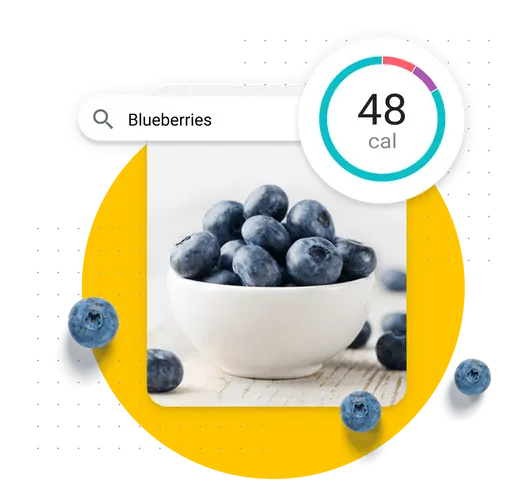

Gesundheit beginnt bei der Ernährung.
Möchtest du bewusster essen? Zeichne deine Mahlzeiten auf, erfahre mehr über deine Gewohnheiten und erreiche deine Ziele mit MyFitnessPal.
STARTE KOSTENLOS

Zeichne mehr als 14 Millionen Nahrungsmittel auf.
Sieh dir eine Übersicht deiner Kalorien und Nährstoffe an, vergleiche Portionsgrößen und erfahre, wie das, was du isst, dir beim Erreichen deiner Ziele hilft.